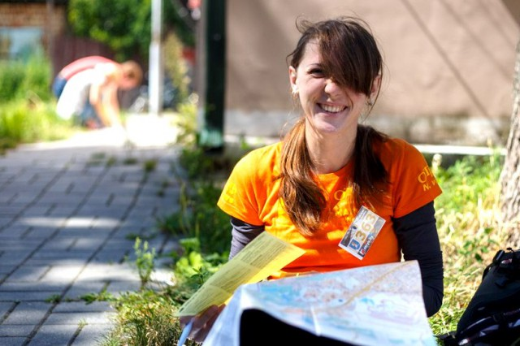
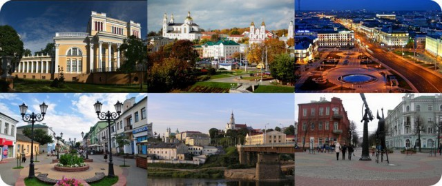

БРИФИНГ для участников игры
В последнюю пятничную ночь этого лета в Минске пройдёт поисковая городская игра для пешеходов и велосипедистов «Вино из одуванчиков» от otryv.by.
В игре можно принять участие, собрав свою команду из 2-4 человек, либо присоединившись к уже существующей команде.
Время старта вы можете выбрать при регистрации на сайте. Если вы играете пешком, то можете также выбрать маршрут по сложности: более короткий (7 часов) или длинный (8 часов).
В случае плохой погоды и при наличии свободных мест категорию можно поменять прямо перед стартом. Оплата участия при этом сохраняется.
Мероприятие только для участников 18 лет и старше.
Игра станет заключительной в календаре покатушек сообщества «Ночной велопобег». Также она закроет сезон 2016 года и в самом проекте «Отрыв».
Узнать Минск лучше через игру: горожане и гости столицы поучаствовали в квесте.
Программа «Вовремя» на телеканале MIHCK TV, эфир от 10.04.2016
Фотоотчёт с городской игры "Отрыв" 10 апреля в Минске от Ольги КАЧУРА:
Фотоотчёт с городской игры "Отрыв" 10 апреля в Минске от Евгения БАНКОВСКОГО:
Фотоотчёт с городской игры "Отрыв" 10 апреля в Минске от Александра ГОРБАЦЕВИЧА:
Фотоотчёт с городской игры "Отрыв" 10 апреля в Минске от Алексея БАСАЛАЯ:
Если у вас тоже есть фото с игры, добавляйте их в фотоальбом VK и отмечайте друзей и знакомых:
Уважаемые участники! Спасибо вам всем за то, что провели насыщенный день 10 апреля вместе с нами.
Затем мы начнём проверять результаты, каждую категорию по очереди, и о появлении результатов будем также сообщать здесь.
Результаты по категориям:
- Пешеходная - 13 апреля, 20:00
- Пешеходная Блиц - 14 апреля, 23:30
- Велосипедная - 15 апреля, 03:15
- Городской транспорт - 15 апреля, 20:30
- Прогулочная - 15 апреля, 15:50
Почему так долго? Кроме того, что мы делаем эту игру, мы ещё работаем на обычной работе, поэтому подведением итогов можем заниматься только в свободное от неё время.
Спасибо за понимание!
Приём апелляций продолжается!
Если вы нашли ошибку в таблице результатов, или считаете, что какие-либо КП были не зачтены незаслуженно, пожалуйста, сообщите нам об этом как можно скорее.
Мы ждём ваших электронных писем на адрес result@otryv.by. В теме письма обязательно укажите номер и название вашей команды. Все апелляции будут рассмотрены: мы обязательно ответим на каждое письмо!
Что делать, пока результатов нет?
Выкладывайте фото и рассказы о впечатлениях от игры с хэштегом #otryv в социальные сети и блоги. И в общий альбом в VK: vk.com/album-1151542_230340744
А ещё уже опубликована анкета, при помощи которой можно оценить прошедшую игру.
Между Отрывом и лазертагом есть много общего — победа зависит от команды и от тактики, а удовольствие от процесса гарантировано профессионализмом организаторов :) Поэтому мы рады сообщить что клуб активного отдыха LASERWAR.BY предоставляет призы победителям и бонусы всем(!) любителям Отрыва!
1. Победители ОТРЫВА во всех номинациях получат Сертификаты на бесплатный лазертаг
2. 2-е места во всех номинация получают скидку 50% на игру в лазертаг или в пейнтбол
3. 3-и места во всех номинациях получают 30%-ую скидку на лазертаг или пейнтбол или на прохождение веревочного парка!
4. ВСЕ участники ОТРЫВА получают в 2016 году скидку 10% в клубе LASERWAR.BY на лазертаг, пейнтбол или прохождение веревочного парка в Гонолесе! Чтобы получить скидку, необходимо предъявить любой сувенир с логотипом Отрыва (старый логотип тоже годится)!
Напоминаем, что клуб активного отдыха LASERWAR.BY – это более десятки разных площадок в Минске и за городом, в том числе:
- крытая площадка для лазертага и пейнтбола в Минске – СОЛТЫСА. Гигантская площадка в стиле «индастриал» напоминает игру Сталкер, что отразили в календаре постоянные члены клуба LASERWAR.BY. Игровая площадь более 4 тыс метров, есть комнаты отдыха. НЕ ПРОПУСТИТЕ: открытые (сборные) игры по воскресеньям в 10.00 с участием команд клуба LASERWAR.BY (кстати, многократных победителей чемпионатов и турниров по лазертагу – вы сможете многому научиться!)
- Основная база клуба LASERWAR.BY – ГОНОЛЕС. В этом году построены новые площадки для лазертага и пейнтбола, и вот-вот —в мае —откроется профессиональная веревочная трасса, троллей (скоростной спуск) и скалодром! Можно будет покататься на квадроциклах, поесть шашлык (беседки и шатры – тоже новые) — так что пользуйтесь хорошей погодой и скидкой : )
- другие популярные площадки: ПАРК в Минске (потому что самая дешевая), СОСНОВАЯ в Минске (потому что невероятно сложная), ЗЕЛЕНОЕ (потому что это просто культовое место для любителей лазертага), а также почти любая база отдыха или просто подходящий лес : )
Отрываться на лазертаге – самое подходящее развлечение если в этот день нет Отрыва, так что заказывайте игры в клубе LASERWAR.BY по телефонам +375 29 3-674-674 (velcom) или +375 29 5-674-674 МТС.
Призы победителям городской игры «Отрыв #82: Level UP!» 10 апреля в Минске любезно предоставлены нашими давними друзьями и партнёрами — организаторами живых квестов «GameRoom».
«GameRoom» — это команда, которая любит умные игры и ценит в них драйв. Люди, прошедшие несколько сотен городских игр самого разного плана, собрались вместе, чтобы делать по-настоящему увлекательные квесты. Сегодня «GameRoom» предлагает 4 квестовых комнаты. Каждая со своей спецификой и настроением. Это «Похищение», «Индиана Джонс», «Идентификация» и «Пираты Карибского моря».
Читать полный текст
Проект «Отрыв» во многом основан на традициях. Летят месяцы и годы, чередуются города и темы игр, но то, что собирает нас вместе, остаётся неизменным: впечатления, приключения, открытия, возможность проявить свои знания и умения, гордость за свои результаты и радость атмосферы общего праздника.
Об этом не понаслышке известно бывалым игрокам. Каждый из них может подтвердить: сколько бы игр (или даже сезонов!) ты не пропустил — когда вновь решишь вернуться «в строй», игра встретит тебя как старого знакомого и давнего друга.

А из разговоров со «старожилами» на старте или на финише игры любой новичок может услышать множество интересных историй. Рассказы о былых временах, о точках и заданиях, об удачах и провалах — это целый пласт, культурный слой, которым «Отрыв» успел обрасти за долгие 12 лет своего успешного существования.
Мы, как организаторы проекта, всегда старались быть его хранителями — но при этом никогда не были консерваторами. Мы прикладываем множество усилий, чтобы «Отрыв» продолжал развиваться. Когда появляется новая идея, или приходит пора для очевидно назревших изменений, мы спешим как можно скорее воплотить их в реальности.
Те эксперименты, которые вы, наши участники, принимаете «на ура», мы стараемся сделать неотъемлемой частью наших событий, нашими традициями.
И сейчас мы расскажем вам об одном важном изменении, которое мы затеяли несколько месяцев назад.
Читать полный текст
Вступили в силу изменения в тексте публичной оферты для пользователей сайта otryv.by и его форума.
Что изменилось:
- Собственником Информационного электронного ресурса, правообладателем объектов авторского права (программный код, дизайн), с помощью которых ресурс функционирует, теперь является Индивидуальный предприниматель ИП Поросятьев Алексей Сергеевич, зарегистрированный Минским горисполкомом 7 октября 2015 г. (УНП 192546191);
- Для идентификации пользователей добавлена поддержка учётных записей присоединённых внешних сервисов Яндекс.Паспорт, Мой Мир;
- Пароли учётных записей пользователей теперь хранятся в зашифрованном виде и более недоступны для просмотра при помощи функции "Восстановить пароль".
Целью изменений является повышение безопасности и удобства для пользователей.

В блоге Дениса Блища сегодня появился субъективный рейтинг областных центров Беларуси с точки зрения привлекательности для туристической поездки из Минска. Текст во многом поверхностный и спорный (потому что вкусовщина), и, как часто это бывает, комменты интересней самой статьи.
Вот например лайфкахи от St. Martin'а по областным центрам Беларуси:
Читать полный текст
А если вы дочитали это до конца, то сейчас самое время открыть нашу "Ждалку" и выбрать один или несколько городов Беларуси, в который вы бы хотели съездить на городскую игру-квест-экскурсию Отрыв. Вы выбираете - мы проводим!
А обсудить статью можно в VK тут: http://vk.com/otryvby?w=wall-1151542_5456
Видеосюжет о городской игре «Тёплые Буквы: Минский словарь», которую команды организаторов городских игр «Бегущий Город» и «Отрыв» вместе подготовили и провели в Минске 31 января 2о15 года.
Автор сюжета - Артём Богославский.
Популярные метки:
Наши контакты
Пожалуйста, обращайтесь к нам по любым вопросам:
+375 29 556-03-70 (МТС)
+375 29 339-06-61 (Velcom)
e-mail: info@otryv.by
Мы будем рады помочь!